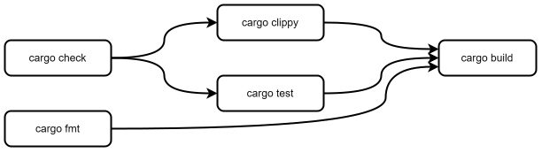

Clippy and Fmt
The Rust ecosystem has a wealth of tools that support us when writing Rust but two of the most important ship with the default tool suite.
rustfmt- Pronounced Rust Format, helps us keep our code styles consistent, so that its easy to share your code or read and learn from someone else’s.clippy- Named after the old Microsoft Office tool, helps spot common mistakes, antipatterns, and even make suggestions on things like performance, scalability or readability improvements.
I also want to talk a little bit about cargo check and how we can use all of these tools together to make sure our
work is always the best we can make it!
rustfmt
rustfmt is a formatting tool for Rust. Programming language formatting tools allow you to configure how you want your
code to look. For example:
-
Do you like opening curly brakets on the end of a line, like this:
#![allow(unused)] fn main() { fn example() { // ... } }or on a new line like this:
#![allow(unused)] fn main() { fn example() { // ... } } -
Do you indent with four spaces:
#![allow(unused)] fn main() { fn hello() { println!("Hello"); } }or two:
#![allow(unused)] fn main() { fn hello() { println!("Hello"); } } -
Does the last item in a list across multiple lines have a trailing comma:
#![allow(unused)] fn main() { let list = [ "one", "two", ] }or not:
#![allow(unused)] fn main() { let list = [ "one", "two" ] } -
How many empty lines are allowed between lines of code in a function?
-
etc…
Maintaining a consistent style improves the legibility of code, making it faster for engineers to read and understand what’s happening. This is true, even if you only write code for yourself, using familiar patterns reduces the cognitive load to parse what you’re looking at. When working together as a group, it’s important to come to an agreement as to how you will style your code together, but luckily a Formatter will reduce the burden of having to maintain the style once you’ve picked what to use.
Different languages have different “styles” that they follow. Some older languages may have multiple well established styles to choose from. Luckily there’s an official Rust Style Guide that gives us a compelling reason in the community to all write code the same way, and Rust comes with its own formatter called “Rust Format” that will automatically maintain the style for you!
You can call Rust Format manually using cargo fmt and it will automatically reformat your entire project, however its
definitely best if you can set your IDE to automatically run it any time you save a file. This will save you any big
unexpected changes.
If you just want it to tell you if anything is incorrectly formatted, you can use cargo fmt --check. We’ll come back
to this later!
Finally, it might be that you and your team find some aspect of the official Rust Style Guide particularly egregious,
that’s fine! Rust Format allows you to configure how it will format your code through rustfmt.toml. You can find
a complete guide to what you can control, and how, here:
https://rust-lang.github.io/rustfmt/
rustfmt now comes with the rust tool suite by default, but if for some reason you don’t have it, you can install it
with rustup component add rustfmt
clippy
Clippy is Rust’s linter, a tool that can not only make sure your code is correct (rustc technically already does
that for you) but even offer suggestions on how to improve your code, and explain why an alternative might be better!
To run Clippy with the default configuration, simply type cargo clippy
This is an incredibly powerful tool, not just for making sure your code is the best it can be, but as an aid for learning.
Antithetical to that, though still incredibly useful, Clippy can go right ahead and fix many of the common issues it
might find, simply by passing the --fix flag (eg: cargo clippy --fix). Obviously I recommend making sure you
understand the changes it’s suggesting before allowing it to proceed.
And, Clippy won’t just check your code either, it can also spot common mistakes in your documentation (we love
documentation here if you couldn’t tell 😅). For example, if in your doc comments you use underscores _ or double
colons :: outside of backticks, Clippy will assume this is a mistake and let you know.
There’s a lot of flexibility in how you can configure Clippy. Lints are broken up into groups for easy control, so we
typically might decide at the group level, what to include, and whether it should be considered a warning or completely
denied. For example, I tend to include a group of lints called pedantic with a warning (these are usually allowed by
clippy which means you don’t get told if there is a potential issue).
To do this you can either:
- run:
cargo clippy -- -W clippy::pedanticor… - in your entry file to my project (eg,
main.rs, orlib.rs) you can add the line:#![allow(unused)] #![warn(clippy::pedantic)] fn main() { }
The benefit of the latter is you can set a nice default for the project without you or anyone else needing to remember what options to pass to Clippy, while the former is useful if you want to override that or any other behaviour.
For a full list of lints, check the list here: https://rust-lang.github.io/rust-clippy/master/index.html#/Configuration
Clippy now comes with the rust tool suite by default, but if for some reason you don’t have it, you can install it with
rustup component add clippy.
Cargo Check
There’s one last tool I want to mention quickly, and it will initially seem quite underwhelming by comparison to the others, but stick with me.
cargo check is a tool which will… check your code and all its dependencies for errors. Groundbreaking, right?
But, we’d find out that our code has errors when we try to build it with cargo build, so what’s the point of
cargo check? Well, cargo check essentially does the same job as cargo build but skips the final step of code
generation. This means it’s faster, and importantly, cheaper to perform, so it can be used as a fast-fail.
The work it does isn’t wasted either. Because it does in fact perform some of the compilation steps, the output of this
is cached on your machine so that other tools (such as cargo build and Clippy) can use that to skip earlier steps in
their own processes.
This might not seem very useful on your machine, but it comes in very handy with Continuous Integration.
Continuous Integration
Continuous Integration (CI) is a technique that we use to maintain high quality, robust, and “correct” code in our code base. CI is usually used to help control what goes into your source code management system, where you might be storing your code.
Software Configuration Management systems like Git, Mercurial, Subversion (SVN), etc, are out of scope for this book, however, if you haven’t already, you should learn to use one of these as quickly as possible. I can’t tell you which to use though as it depends on what kind of application you’re building. Git is very common, and its what I use for this book, but it’s better for things that are being primarily built from text based resources, like websites, or desktop application. If you’re making games or something that uses a lot of images or other non-text based assets though you might want to use SVN, Plastic or Perforce.
Whatever you choose, you can use Continuous Integration to make sure that every time you make changes, those changes make your project better, and minimise the risk of them making things worse.
How you achieve this will vary depending on not only what SCM you use, but potentially who hosts it. GitLab CI is very different from GitHub Actions. The main idea however is to run a set of instructions before allowing changes to be integrated (or merged) into the main project.
For example, a typical Git workflow might have a main branch. When you come to do some work, you’d create a new branch
based on what’s currently in main and name it something relevant to the work you’re going to do (for example, as I
write this chapter of the book, I’m on a branch called clippy-and-fmt). When you’re happy with your code, you would
merge your branch with main and main would get all of your changes. This is where CI helps, it makes sure that
whatever you’re doing on your branch is up to the level of quality that is expected of code in main.
We can use the tools we’ve talked about in this and previous chapters to create a CI workflow.
Roughly what we want to do is:
-
run
cargo check, if this fails, there’s not a lot of point in continuing, so we get our results faster -
run
cargo fmt --checkwhich will make sure code abides by our style guide without changing anything -
run
cargo clippy -- -D warningswhich error if there are any warnings from clippyRemember, although warnings don’t necessarily mean something is actually wrong, you should try to make sure you to fix them all anyway as the more irrelevant warnings you’re outputting, the more likely it is that you’ll miss something that is relevant!
-
cargo testwill run all tests and doc tests -
cargo buildwill make sure your code actually compilesThis can also be very useful in Continuous Deployment (CD) processes, after merging to main, allowing you to immediately deploy your latest code automatically
Running all of this one after the other can be very time-consuming, but some of it can be run in parallel.
cargo check and cargo fmt --check do not depend on anything else, and can act as fast fails, letting you know that
it’s not worth continuing the process.
cargo test and cargo clippy -- -D warnings are only going to work if cargo check also works, so as soon as
cargo check is complete, we can start working on them
Finally, once cargo test and cargo clippy have succeeded, we can move to the final check, cargo build. At this
point, everything that could be caught should have been caught so there should be no surprises which means we might as
well wait for cargo fmt to complete too.
This gives us this order of events:

Depending on your CI suite though, it might be that each of these tasks runs in isolation. For example, it might run
each step in a docker container. But, cargo check is going to do a lot of hard work some of the other steps can use.
This is where its worth learning your CI suite’s caching process, so that you can cache the output of the cargo check
step.

Next Chapter
Next we’re going to cover traits; what they are, how to write them, how to implement them, and some of the more useful traits Rust provides that you should be aware of.